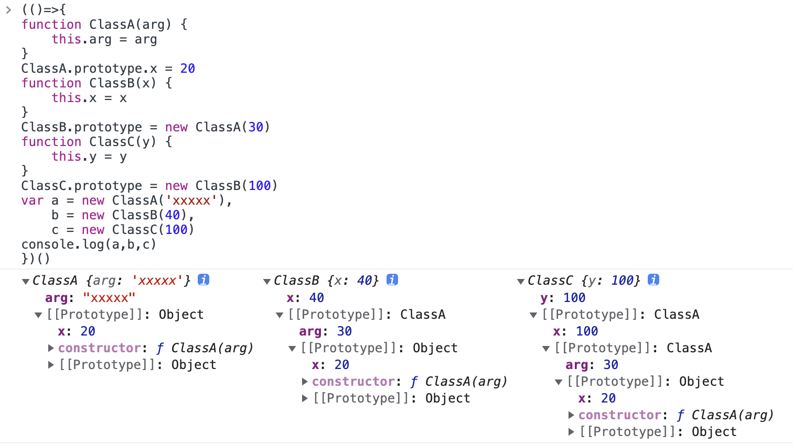

- js数据类型
- 判断数据类型：typeof()、instanceof、constructor、Objece.prototype.toString.call()
- 详解instanceof
- 普通函数、匿名函数、箭头函数 的特点和区别<this指向>
- 箭头函数与普通函数的区别
- this指向错题集
- 箭头函数避免使用的场景
- js的new操作符到底做了什么？
数据类型
值类型(基本类型)：字符串（String）、数字(Number)、布尔(Boolean)、对空（Null）、未定义（Undefined）、Symbol。
引用数据类型（对象类型）：对象(Object)、数组(Array)、函数(Function)，还有两个特殊的对象：正则（RegExp）和日期（Date）。
判断数据类型：typeof()、instanceof、constructor、Objece.prototype.toString.call()
typeof()
typeof 可以判断基础类型[null除外，null返回Object]，引用数据类型Function/Objece/Array反回的都是Object[] instanceof Array
判断引用对象的类型返回的是true||false，不能判断基础类型[全部返回false]console.log(2 instanceof Number); // false console.log(true instanceof Boolean); // false console.log('str' instanceof String); // false console.log([] instanceof Array); // true console.log(function(){} instanceof Function); // true console.log({} instanceof Object); // true // console.log(undefined instanceof Undefined); // 报错 // console.log(null instanceof Null); // 报错().constructor === Array
console.log((2).constructor === Number); // true console.log((true).constructor === Boolean); // true console.log(('str').constructor === String); // true console.log(([]).constructor === Array); // true console.log((function() {}).constructor === Function); // true console.log(({}).constructor === Object); // true这里有一个坑，如果我创建一个对象，更改它的原型，constructor就会变得不可靠了
function Fn(){}; Fn.prototype=new Array(); var f=new Fn(); console.log(f.constructor===Fn); // false console.log(f.constructor===Array); // trueObject.prototype.toString.call() 使用 Object 对象的原型方法 toString ，使用 call 进行狸猫换太子，借用Object的 toString 方法
var a = Object.prototype.toString; console.log(a.call(2)); console.log(a.call(true)); console.log(a.call('str')); console.log(a.call([])); console.log(a.call(function(){})); console.log(a.call({})); console.log(a.call(undefined)); console.log(a.call(null));
详解instanceof
instanceof运算符用于检测对象的原型链上是否存在构造函数的 prototype属性，即是否存在构造函数的原型对象prototype；有则返回 true，否则返回 false
function ClassA(arg) {
this.arg = arg
}
ClassA.prototype.x = 20
function ClassB(x) {
this.x = x
}
ClassB.prototype = new ClassA(30)
function ClassC(y) {
this.y = y
}
ClassC.prototype = new ClassB(100)
var a = new ClassA('xxxxx'),
b = new ClassB(40),
c = new ClassC(100)
// instanceof 运算符用来检测一个对象在其原型链中是否存在一个构造函数的prototype属性。
console.log(a instanceof Object) // true
console.log(a instanceof ClassA) // true
console.log(b instanceof Object) // true
console.log(b instanceof ClassB) // true
console.log(b instanceof ClassA) // true
console.log(c instanceof ClassA) // true
console.log(c instanceof ClassB) // true
console.log(c instanceof ClassC) // true
console.log(c instanceof Object) // true

箭头函数与普通函数的区别
- 箭头函数的使用
- 普通函数到箭头函数
- 省略大括号和 return
- 省略小括号
- 箭头函数与普通函数的区别
- 箭头函数的 this 是父级作用域的 this
- call、apply、bind无法改变箭头函数的 this
- 不可以作为构造函数
- 不可以使用 arguments
- 箭头函数不支持 new.target
普通函数、匿名函数、箭头函数 的特点和区别<this指向>
- 普通函数 【具名函数】
普通函数存在 函数声明的提升普通函数的定义： 关键字（function） 函数名 （参数）{ //参数是形参（形式参数） 函数体 return xxx } 普通函数的调用： 函数名（参数） //参数是实参（实际参数）//函数声明提升 fun([1,2,3]) //[1,2,3] function fun(val){ console.log(val) console.log(arguments) } //调用函数 fun([1,2,3]) //[1,2,3] - 匿名函数
匿名函数存在 变量提升 不存在函数声明提升匿名函数的定义： var 变量名 = 关键字 () { 函数体 return xxx } 匿名函数调用： 变量名()console.log(b); //undefined b(); // Uncaught TypeError: b is not a function var b = function () { console.log(arguments) } b() // - 箭头函数
箭头函数参数只有一个时，包裹参数的括号 （） 可以去掉
箭头函数函数体只有一行的时候，包裹函数体的花括号 {} 可以去掉箭头函数的定义： var 变量 = (参数) => { //形参 函数体 } 箭头函数的调用： 变量名(参数) //实参
同：var a = (val) => { //箭头函数是匿名函数，不能作为构造函数，不能使用new console.log(arguments) } a([4,5,6])
函数的数据类型都是function
区别：
this的指向：
就是谁调用匿名函数，匿名函数中的this就指向谁
箭头函数的 this 是父级作用域的 this
（箭头函数通过 call() 或 apply() 方法调用一个函数时，只传入了一个参数，对 this 并没有影响。）const obj = { name: 'Jack', getThis: () => { console.log(this); }, }; obj.getThis(); // Window
普通函数和匿名函数有arguments内置对象
箭头函数没有arguments内置对象
箭头函数没有 prototype (原型)
箭头函数不能做构造函数（因为没有this）
总结
- this 永远指向最后调用它的那个对象
- 匿名函数的this永远指向window
- 使用.call()或者.apply()的函数是会直接执行的
- bind()是创建一个新的函数，需要手动调用才会执行
- 如果call、apply、bind接收到的第一个参数是空或者null、undefined的话，则会忽略这个参数
- forEach、map、filter函数的第二个参数也是能显式绑定this的
this指向错题集
题一
function foo () {
console.log(this.a)
}
function doFoo (fn) {
console.log(this)
fn()
}
var obj = { a: 1, foo }
var a = 2
var obj2 = { a: 3, doFoo }
obj2.doFoo(obj.foo)
// 结果
// { a:3, doFoo: f }
// 2题一延伸
如果你把一个函数当成参数传递到另一个函数的时候，也会发生隐式丢失的问题，且与包裹着它的函数的this指向无关。在非严格模式下，会把该函数的this绑定到window上，严格模式下绑定到undefined。
"use strict"
function foo () {
console.log(this.a)
}
function doFoo (fn) {
console.log(this)
fn()
}
var obj = { a: 1, foo }
var a = 2
var obj2 = { a: 3, doFoo }
obj2.doFoo(obj.foo)
// 结果
// { a:3, doFoo: f }
// Uncaught TypeError: Cannot read property 'a' of undefined
题二
function foo () {
console.log(this.a)
}
var obj = { a: 1 }
var a = 2
foo() // window.foo() a=2
foo.call(obj) // foo的this指向obj a=obj.a=1
foo().call(obj) // 开始会执行foo()函数，打印出2，但是会对foo()函数的返回值执行.call(obj)操作，可是我们可以看到foo()函数的返回值是undefined，因此就会报错了。所以我们可以看到foo.call()和foo().call()的区别了，一个是针对于函数，一个是针对于函数的返回值。
题二延伸
function foo () {
console.log(this.a)
return function () {
console.log(this.a)
}
}
var obj = { a: 1 }
var a = 2
foo()
foo.call(obj)
foo().call(obj)
结果：2 1 2 1题三
不能用箭头函数定义对象的方法，this指向window
var obj = {
name: 'obj',
foo1: () => {
console.log(this.name) // window
},
foo2: function () {
console.log(this.name) // obj
return () => { // 箭头函数this由外层作用域[函数/window]来决定的，且指向函数定义时的this而非执行时。
console.log(this.name) // obj
}
},
foo3: () => {
console.log(this.name) // window
return function () {
console.log(this.name) // window
}
},
foo4: () => {
console.log(this.name) // window
return () => {
console.log(this.name) // window
}
}
}
var name = 'window'
obj.foo1()题四
var name = 'window'
function Person (name) {
this.name = name
this.foo1 = function () {
console.log(this.name)
}
this.foo2 = () => {
console.log(this.name)
}
}
person1.foo1() // person1
person1.foo2() // person1题五
var name = 'window'
function Person (name) {
this.name = name
this.obj = {
name: 'obj',
foo1: function () {
return function () {
console.log(this.name)
}
},
foo2: function () {
return () => {
console.log(this.name)
}
}
}
}
var person1 = new Person('person1')
var person2 = new Person('person2')
person1.obj.foo1()() // window
person1.obj.foo1.call(person2)() // window
person1.obj.foo1().call(person2) // person2
person1.obj.foo2()() // obj
person1.obj.foo2.call(person2)() // person2
person1.obj.foo2().call(person2) // obj题六
function foo() {
console.log( this.a ); //2
}
var a = 2;
(function(){
"use strict";
foo();
})();我们知道，使用了"use strict"开启严格模式会使得”use strict”以下代码的this为undefined，也就是这里的立即执行函数中的this是undefined。
但是调用foo()函数的依然是window，所以foo()中的this依旧是window，所以会打印出2。
如果你是使用this.foo()调用的话，就会报错了，因为现在立即执行函数中的this是undefined。
或者将"use strict"放到foo()函数里面，也会报错。
箭头函数避免使用的场景
- 使用箭头函数定义对象的方法
let obj = { value: 'LinDaiDai', getValue: () => console.log(this.value) } obj.getValue() // undefined - 定义原型方法
function Foo (value) { this.value = value this.getValue = () => console.log(this.value) // 这个方法可以 this.value=1 } Foo.prototype.getValue = () => console.log(this.value)
const foo1 = new Foo(1)
foo1.getValue() // undefined
3.构造函数使用箭头函数
```javascript
const Foo = (value) => {
this.value = value;
}
const foo1 = new Foo(1)
// 事实上直接就报错了 Uncaught TypeError: Foo is not a constructor
console.log(foo1);4.作为事件的回调函数
const button = document.getElementById('myButton');
button.addEventListener('click', () => {
console.log(this === window); // => true
this.innerHTML = 'Clicked button';
});js的new操作符到底做了什么？
function creat(Constructor,...arg){
// 1.创建一个空的对象
let obj = {};
// 2.将空对象obj的__proto__属性指向构造函数的原型对象
obj.__proto__ = Constructor.prototype;
// 3.改变构造函数的this指向，并将剩余的参数传入
let result = Constructor.apply(obj,arg);
// 4.判断result是否是引用数据类型，如果是引用数据类型返回result，如果是基础数据类型返回空对象
return result instanceof Object ? result : obj;
}